Xero Set Up
Use these steps to set up your Xero Integration in FrameReady.
How to Set up Xero Integration
-
Go to this web address:
https://developer.xero.com/myapps -
Log in using your email address and Xero password.
If asked to set up multi-factor authentication, you can do this later. -
Click the blue New app button (top right).
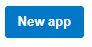
-
In the App name field, give this "app" a clear name, e.g. FrameReady Link
-
For the Integration type, select "Web app"
-
In the Company or application URL field, enter https://frameready.com
-
In the Redirect URL field, enter: https://frameready.com/xero
-
Check the box I have read and agree to the Xero Developer Platform Terms & Conditions.
-
Click the blue Create app button.
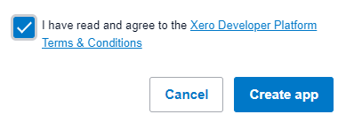
-
On the web page that appears, click Configuration (lefthand side navbar).
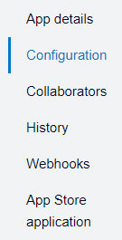
-
On the Configuration web page, copy the Client id field that was created for you.
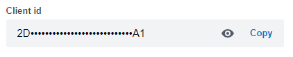
-
Go back to FrameReady.
On the Main Menu, click the Setup Data icon (upper right). -
Open the Fiscal tab, and click the Xero Integrations Settings button.
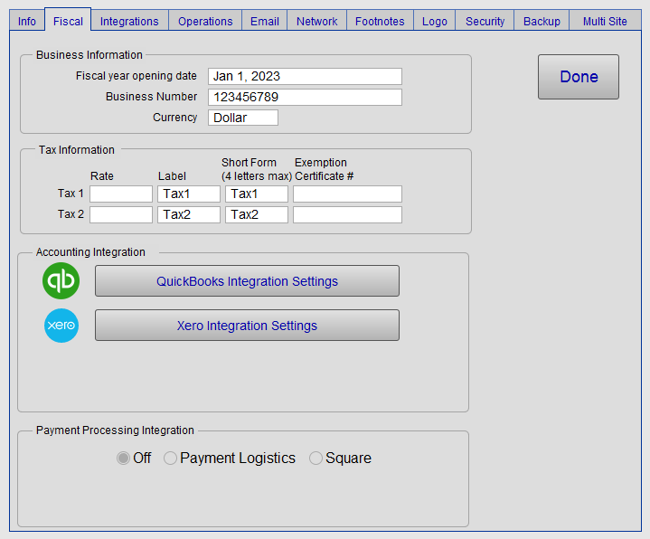
-
The Xero Integration in FrameReady; click the mouse into the Client ID field (marked in red) and paste the Client id from Xero.
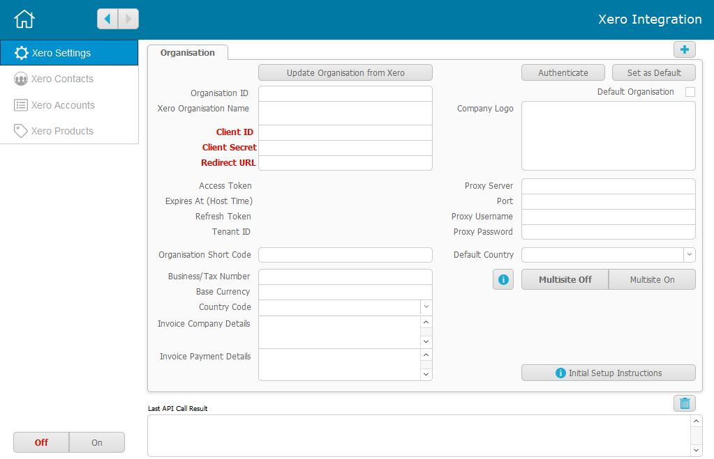
-
Go back to the Xero web page; click the Generate a Secret button.
-
A new field appears; click Copy.
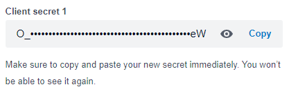
-
Go back to the Xero Integration in FrameReady.
-
Click the mouse into the Client Secret field (marked in red) and paste the Client secret from Xero.
-
Click the mouse into the Redirect URL field (marked in red) and enter: https://frameready.com/xero
-
Click the Authenticate button (top right).
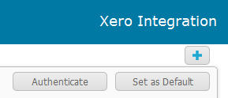
-
When the Xero login screen appears, log in to your Xero account.
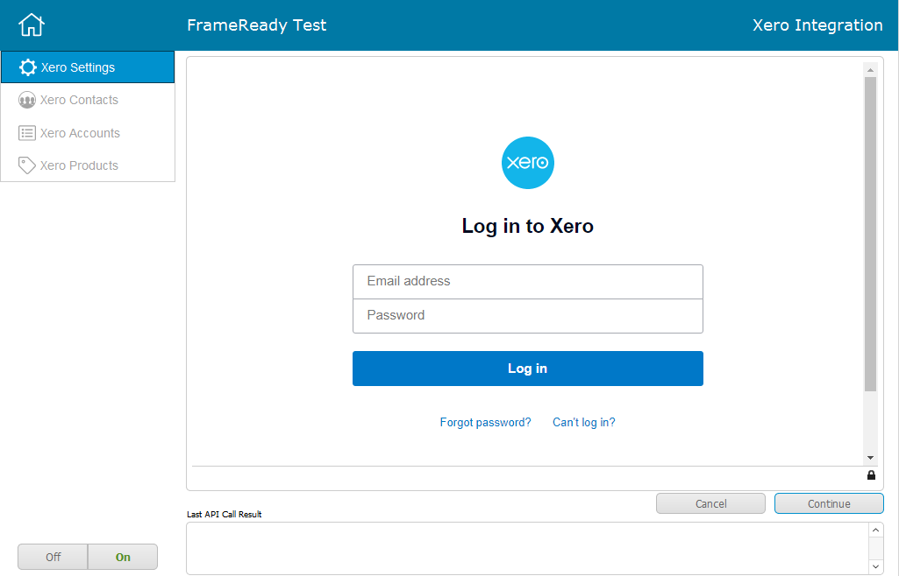
-
If asked to set up multi-factor authentication, you can do this later; click Not now.
-
Xero wants to confirm givng access to the "new app" you created. Scroll down and click Allow Access.
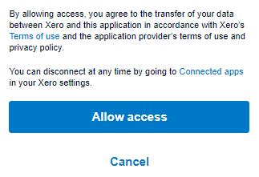
-
If you entered https://www.frameready.com in the Redirect URL field, then the FrameReady homepage appears.
Click the Continue button (lower right).
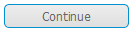
-
The Xero Integration returns to the Settings layout; an alert appears.
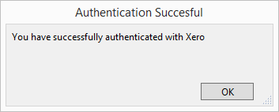
Also, the Xero Integration switches from "off" to "on" (lower left).
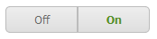
-
In the Xero Integration in FrameReady, click the Update Organization from Xero button.
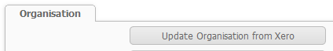
-
When completed, an alert appears. Click OK to dismiss it.
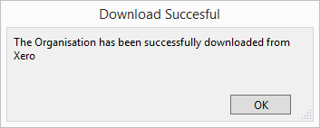
-
You should see your Xero Organization Name appear.
To add a second organization (for FrameReady Multi Site), use the plus icon (top right).
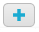
If your store has multiple sites and each site is a separate organization in Xero, then add the new organizations and turn Multisite On if you would like to link each individual site to the respective organization.
Last modified 5/8/2023.
© 2023 Adatasol, Inc.